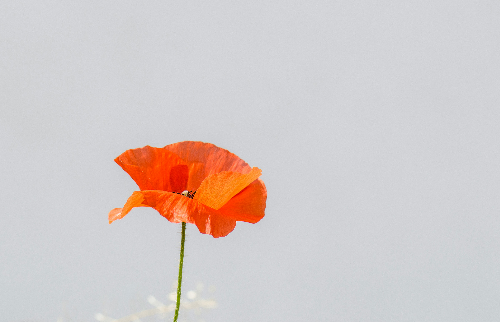

Lilies
Roses
Tulips

Poppies

ORDER NOW
Papyrus is Sans's brother, a major character, and the second boss in Undertale. Papyrus wants to become a Royal Guard to gain fame and friends. He patrols and prepares many of Snowdin Forest's puzzles in hopes of capturing a human and earning his goal.
Sans is the older brother of Papyrus and a major character in Undertale. He first appears in Snowdin Forest after the protagonist exits the Ruins. Sans is the deuteragonist of the Neutral and True Pacifist routes, in which he keeps an eye on the protagonist throughout the game. He is also the final boss of the Genocide Route.
Flowey is the first major character that the protagonist encounters in Undertale. Flowey serves as the main antagonist for the Neutral and True Pacifist routes, and can be considered a deuteragonist for the Genocide Route. He provides an introduction to the mechanics of encounters by sharing "friendliness pellets ," which are actually harmful bullets, revealing his philosophy of "KILL or BE KILLED." He serves as the final boss of the Neutral Route.
Toby "Radiation" Fox (born October 11, 1991), also known as FwugRadiation, is a music composer and game developer. He developed the critically acclaimed RPG Undertale and produced its soundtrack in 2015. His avatar is the Annoying Dog.
Pittsburgh's Thrill and Entertainment Destination With eight exciting roller coasters, extreme thrill rides, water attractions, and mild offerings like Kiddieland and Thomas Town for the little ones, Kennywood offers something for everyone!
GET TICKETS NOWCedar Point in Sandusky, Ohio, is the second-oldest amusement park in North America. It's home to 68 rides, a mile-long beach, on-site accommodations and more. Cedar Point in Sandusky, Ohio, is an American summertime tradition on Lake Erie.
GET TICKETS NOWWaldameer is the fourth oldest amusement park in Pennsylvania, the tenth oldest in the nation, and one of only thirteen trolley parks still operating in the United States. The park is admission-free, with a midway, and covered picnic facilities.
GET TICKETS NOWHersheypark® was originally created by Milton S. Hershey as leisure grounds for employees of Hershey's Chocolate Factory. Today, our family amusement park in Central Pennsylvania, complete with 15 thrilling roller coasters & a larger-than-life water park, welcomes guests from around the world to experience Hersheypark Happy® all year long!
GET TICKETS NOW